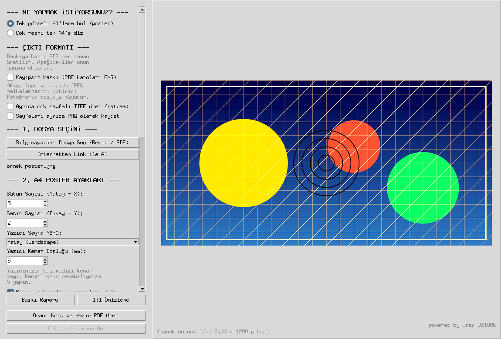
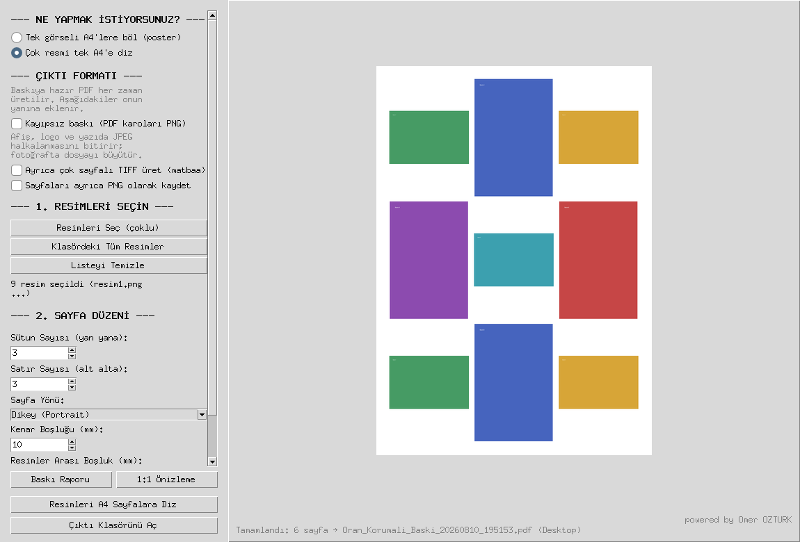

Görseli A4 kağıtlara bölün, poster olarak yazdırın
Elinizdeki resmi ya da PDF'i oranını bozmadan A4 sayfalara böler, kesip yapıştırdığınızda birleşen baskıya hazır tek PDF üretir. Evdeki sıradan yazıcı yeter.
Sürüm 1.2 · Windows, macOS, Linux · MIT lisansı, ücretsiz · dosyalarınız bilgisayarınızdan çıkmaz
Daireler daire kalır
Çoğu araç görseli sayfa matrisinin oranına doldurur; 3×2 kâğıda 16:9 bir görsel verdiğinizde yüzler genişler, daireler basıklaşır. Burada görsel oranı korunarak yerleştirilir, artan alan beyaz bırakılır.
Üç adımda poster
Programı açtıktan sonra tek yapmanız gereken kaç kâğıt istediğinizi söylemek.
-
Dosyayı verin
Pencereye sürükleyip bırakın, bilgisayardan seçin ya da internetteki bir adresi yapıştırın. JPG, PNG, TIFF, PSD, HEIC, RAW, PDF ve AI dosyaları kabul edilir; çok sayfalı PDF'te hangi sayfanın poster olacağı sorulur.
-
Kaç kâğıt olacağını girin
Sütun ve satır sayısını yazın — örneğin 4 × 2, sekiz A4 demek. Program posterin gerçek ölçüsünü ve baskı çözünürlüğünü hesaplar; çözünürlük düşük kalıyorsa üretimden önce uyarır.
-
PDF'i üretin ve yazdırın
Çıktı klasörüne baskıya hazır PDF, her parçanın görüntüsü ve bir baskı raporu düşer. Yazdırırken "Sayfaya Sığdır" kapalı, "Gerçek Boyut" açık olsun; yoksa parçalar birleşmez.
İki mod, ters yönde iki iş
Aynı program hem tek görseli çoğa böler, hem çok görseli teke toplar.
Poster — tek görseli A4'lere böl
Sınıf panosu, dükkân vitrini, doğum günü afişi. Sayfalarda kesim çizgisi, köşe işaretleri, hizalama artıları ve komşuluk etiketi bulunur; PDF'in başına montaj haritası eklenir.
- Çakışma payı ile kesip yapıştırmada tolerans
- Yazıcının basamadığı kenar payı hesaba katılır
- Bütün sayfalar birebir aynı ölçekte basılır

Dizme — çok resmi tek A4'e topla
Katalog sayfası, ürün fotoğrafı, vesikalık. Resimler kırpılmaz; oranı korunarak hücreye sığdırılır. Her sürükle-bırak listeye ekler, öncekileri silmez.
- Izgara düzeni ve hücre sayısı sizin seçiminizde
- Kırpma yok, sığdırma var
- Çıktı yine baskıya hazır PDF

Baskıya giden yolu düşünen ayrıntılar
Program bir ölçekleyiciden fazlası; çıktının kâğıtta tutmasını sağlayan işleri de üstleniyor.
Kesim ve montaj yardımı
Her sayfada kesim çizgisi, köşe işaretleri, hizalama artıları ve komşuluk etiketi; PDF'in başında montaj haritası.
Baskı raporu
Üretimden önce ölçü, DPI, kâğıt sayısı, kesilecek uzunluk ve uyarılar; çıktı klasörüne metin dosyası olarak da yazılır.
Geniş dosya desteği
JPG, PNG, BMP, WEBP, TIFF, PSD, HEIC, RAW (CR2/NEF/ARW/DNG), PDF ve AI. CMYK ve 16-bit kaynaklar baskıya uygun RGB'ye çevrilir.
1:1 gerçek boyut önizleme
Posterin bir bölgesini kâğıttaki ölçüsünde gösterir; ekran cetveliyle kalibre edilir, kâğıda basmadan karar verirsiniz.
Renk yönetimi
Gömülü ICC profili sRGB'ye çevrilir; mat, parlak ve fotokopi kâğıdına göre renk ve kontrast telafisi uygulanır.
Çıktı formatı seçenekleri
Baskıya hazır PDF her zaman üretilir. İstenirse kayıpsız PNG karolar, matbaanın istediği çok sayfalı TIFF ve sayfa PNG'leri eklenir.
Çevrimdışı çalışır
Bölme, ölçekleme ve PDF üretimi bilgisayarınızda yapılır. İsteğe bağlı yapay zekâ büyütme eklentisi de kendi makinenizde çalışır.
Baskı iyileştirme
Unsharp mask, otomatik seviye ve beyaz dengesi, gürültü azaltma; fotoğraf, afiş, tarama ve telefon için hazır ayarlar.
İndirin
Tek dosya halinde gelir, kurulum istemez, çift tıklayınca açılır. Sürüm 1.2, MIT lisansı.
macOS ilk açılışta "geliştirici doğrulanamadı" derse dosyaya sağ tıklayıp Aç → Aç deyin. Kaynak koddan çalıştırmayı tercih ederseniz Python 3.10 veya üstü yeterli; adımlar depodaki kurulum bölümünde. Ekran görüntülü tam kılavuz: KULLANIM_KILAVUZU.pdf.
Sık sorulanlar
Bir görseli kaç A4 kağıda bölebilirim?
Sütun ve satır sayısını siz girersiniz; örneğin 4 sütun × 2 satır 8 A4 eder. Program seçtiğiniz sayfa sayısında posterin gerçek ölçüsünü ve baskı çözünürlüğünü hesaplar, çözünürlük düşük kalıyorsa üretimden önce uyarır.
Programı kullanmak için Python kurmam gerekir mi?
Bu sayfadaki hazır paketi indirirseniz hayır; tek dosya halinde gelir ve çift tıklayınca açılır. Kaynak koddan çalıştırmak isterseniz Python 3.10 veya üstü gerekir.
Görselim bir sunucuya yükleniyor mu?
Hayır. Bölme, ölçekleme ve PDF üretimi bilgisayarınızda yapılır. İsteğe bağlı yapay zekâ büyütme eklentisi de kendi makinenizde çalışır; görseller bilgisayardan çıkmaz.
iPhone'dan gelen HEIC fotoğrafı açılır mı?
Evet. HEIC'in yanı sıra JPG, PNG, BMP, WEBP, TIFF, PSD, PDF, AI ve CR2/NEF/ARW/DNG gibi RAW dosyaları desteklenir.
Yazdırırken nelere dikkat etmeliyim?
Yazıcı penceresinde "Sayfaya Sığdır / Fit to Page" seçeneğini kapatın, "Gerçek Boyut / Actual Size" ya da %100 ölçek ile yazdırın. Aksi halde sayfalar farklı ölçekte basılır ve parçalar birleşmez.
Çok sayıda fotoğrafı tek sayfaya nasıl dizerim?
Dizme modunu seçin. Program resimleri kırpmadan, oranlarını koruyarak tek A4 sayfaya ızgara halinde yerleştirir; katalog, ürün fotoğrafı ve vesikalık için kullanılır.
Program ücretli mi?
Ücretsiz ve açık kaynak. MIT lisansıyla dağıtılır, kaynak kodu GitHub'da açıktır.